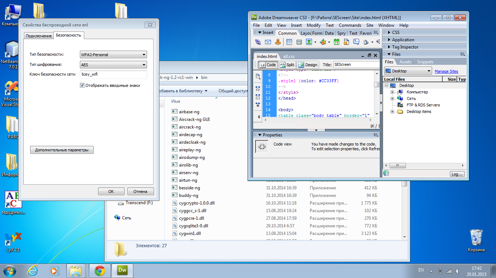

| SEScreen. Ваши скриншоты - наше дело! | |
|
Доброго времени суток! Мы рады приветствовать вас на нашем портале. Цель проекта - облегчить возможность обмена скриншотами у пользователей. Чтобы начать пользоваться нашим творением вам необходимо зарегистрироваться и скачать программу "SEScreen" на свой копьютер.  |
|
| ©2015 SEScreen. OpenSource Project GitHub | |